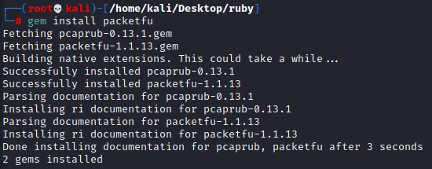
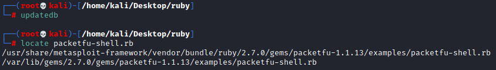
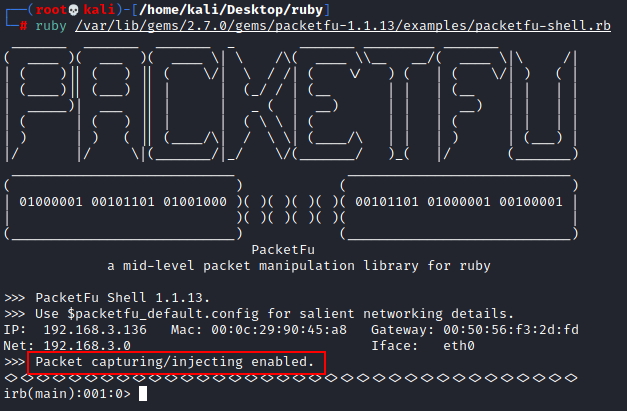

PacketFu
PacketFu Documentation:
https://rubydoc.org/github/todb/packetfu/PacketFuGITHUB:
https://github.com/packetfu/packetfuPacketFu is a
framework/library can help us to use raw sockets and forge packets without need to know low level packet
manipulation.
PacketFu can be used for different purposes: packet creation, sniffing, filtering,
...
Install
Test the installation
updatedb
locate packetfu-shell.rb
ruby /var/lib/gems/2.7.0/gems/packetfu-1.1.13/examples/packetfu-shell.rb
  Packet capturing/injecting is enabled → means that
it works :)
Examples scripts: https://github.com/packetfu/packetfu/tree/31cbecca9cd6d3486629ff4797433784a37ce2e4/examplesBibliography:•
https://rubyfu.net/